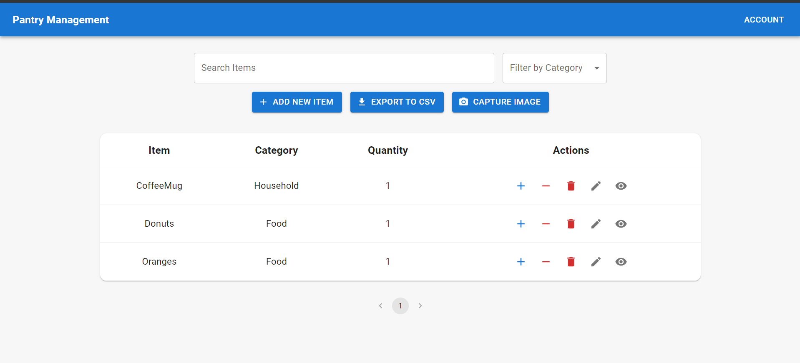

Pantry Tracker
Overview
Developed a full-stack pantry management application that leverages image recognition and machine learning to classify and update pantry items. The application allows users to manage their pantry inventory by capturing images of items, which are then automatically classified and added to the inventory database. The project integrates various modern web technologies, cloud services, and machine learning models to provide a seamless and intelligent user experience.
Key Features
- User Authentication: Implemented secure user sign-in and sign-out functionality using Firebase Authentication.
- Real-time Database: Utilized Firebase Firestore to store and update pantry inventory data in real-time, ensuring that users have up-to-date information on their pantry items.
- Image Capture and Upload: Enabled users to capture images using their device's camera and upload them directly through the browser.
- Image Classification: Integrated Google Cloud Vision API and custom-trained Google Cloud Vertex AI models to classify images and detect pantry items accurately.
- Model Training: Leveraged Google Cloud AutoML to train custom machine learning models with specific images, achieving 100% precision, 0.999 average precision, and a recall of 96.3%, enhancing the accuracy of item classification.
- API Development: Created robust API endpoints using Node.js and Express to handle image uploads, classification, and database updates.
- Deployment: Deployed the application on Vercel, ensuring a scalable and reliable platform for end-users.
- Responsive Design: Designed a responsive user interface using React and Material-UI (MUI) that provides an optimal user experience across various devices.
Technologies Used
- Frontend: React, Next.js, Material-UI (MUI)
- Backend: Node.js, Express.js, Firebase Firestore, Firebase Authentication
- Machine Learning: Google Cloud Vision API, Google Cloud Vertex AI, Google Cloud AutoML
- Deployment: Vercel, Google Cloud SDK
- APIs and Libraries: Axios, Formidable
- Development Tools: Visual Studio Code, Postman, Git, GitHub
Achievements
- Successfully trained and deployed a custom machine learning model to classify pantry items with high accuracy.
- Implemented real-time updates and synchronization of pantry inventory across multiple devices.
- Ensured secure and seamless user authentication and management.
- Achieved a responsive and user-friendly interface that adapts to various screen sizes and devices.
- Attained a classification model with 100% precision, 0.999 average precision, and a recall of 96.3%.
Impact
The Pantry Tracker Application provides users with an innovative and efficient way to manage their pantry inventory. By leveraging advanced image recognition and machine learning technologies, the application automates the process of adding and classifying pantry items, saving users time and effort. The real-time database ensures that users always have the most current information at their fingertips, making pantry management easier and more effective.